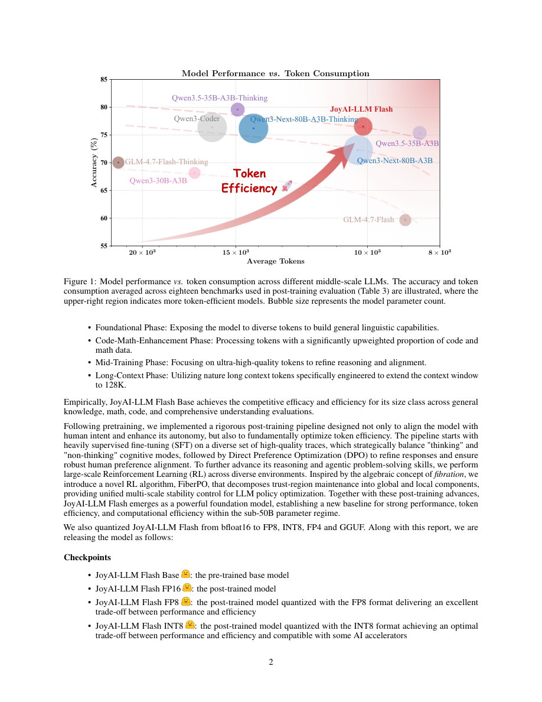

#1
★ 8/10
JoyAI-LLM Flash: Advancing Mid-Scale LLMs with Token Efficiency
JoyAI-LLM Flash：以Token效率推进中等规模大语言模型

图 Figure · Page 2 of paper
🎯 48B参数仅激活2.7B的高效MoE大模型，兼顾推理质量与Token效率
A sparse MoE LLM with 48B params but only 2.7B active, achieving top-tier performance via novel RL and token-efficient reasoning.
| 维度 | 中文 | English |
|---|---|---|
| ❓ 待解决 的问题 |
训练既强大又高效的大语言模型一直是业界难题。大多数前沿模型要么以性能换效率，要么需要极高计算成本。在500亿参数以下的中等规模范围内，如何在不浪费大量推理Token的前提下保持强大性能，尤其困难。 | Training large language models that are both highly capable and computationally efficient is a major challenge. Most frontier models either sacrifice performance for efficiency or require massive compute budgets that limit accessibility. In the sub-50B parameter range, achieving strong benchmark results without burning excessive tokens during inference is especially difficult. |
| 💡 解决 的亮点 |
• **FiberPO算法**：受纤维化理论启发的新型强化学习算法，将信任域约束分解为全局与局部两个层次，实现多尺度稳定的策略优化。 • **极致稀疏架构**：总参数48B，每次前向传播仅激活2.7B，稀疏比例远超同量级主流模型，大幅降低推理成本。 • **思考/非思考模式动态平衡**：在链式推理与直接回答之间智能切换，减少无效Token消耗，提升Token利用效率。 • **训练-推理协同设计**：联合采用密集多Token预测（MTP）与量化感知训练（QAT），在不损失质量的前提下显著提升实际推理吞吐量。 | • **FiberPO**: A novel RL algorithm inspired by fibration theory that decomposes trust-region constraints into global and local components, enabling multi-scale stable policy optimization during post-training. • **Extreme Sparsity**: 48B total parameters with only 2.7B activated per forward pass — a sparsity ratio far exceeding comparable industry models, drastically cutting inference cost. • **Thinking/Non-Thinking Mode Balancing**: A deliberate cognitive mode strategy that adaptively switches between chain-of-thought reasoning and direct answering to minimize wasted tokens. • **Training-Inference Co-Design**: Joint use of dense Multi-Token Prediction (MTP) and Quantization-Aware Training (QAT) to boost real-world inference throughput without sacrificing quality. |
| 🧪 实验 内容 |
模型在多个标准基准上进行了全面评估，涵盖数学推理（MATH-500、AIME 2024/2025、AMC）、代码生成（HumanEval、LiveCodeBench）、语言理解（MMLU、MMLU-Pro、C-Eval）及通用推理（BBH、ARC-Challenge）。基线模型包括DeepSeek-V3、Qwen3-30B-A3B和Mistral等同量级主流开源与闭源模型。同时对思考模式与非思考模式分别评估，以衡量不同任务下的Token效率表现。 | The model was evaluated on a comprehensive suite of standard benchmarks covering math reasoning (MATH-500, AIME 2024/2025, AMC), coding (HumanEval, LiveCodeBench), language understanding (MMLU, MMLU-Pro, C-Eval), and general reasoning (BBH, ARC-Challenge). Baselines include prominent open-source and proprietary models of comparable scale such as DeepSeek-V3, Qwen3-30B-A3B, and Mistral models. Both thinking and non-thinking inference modes were evaluated to assess token efficiency under different task types. |
| 📊 实验 结果 |
JoyAI-LLM Flash在多个基准上达到或超越参数量更大模型的表现。在MATH-500上媲美DeepSeek-V3与Qwen3-30B-A3B；在AIME 2024上位列50B以下模型第一梯队；在MMLU上得分超过85%，可与更大稠密模型抗衡。在简单任务上，非思考模式相比链式推理基线平均减少约40–60%的Token消耗。MTP+QAT协同设计在实际部署中相比标准自回归解码实现了显著的吞吐量提升。 | JoyAI-LLM Flash achieves competitive or superior results across benchmarks compared to models with significantly more active parameters. On MATH-500, it achieves scores rivaling DeepSeek-V3 and Qwen3-30B-A3B. On AIME 2024, it reaches top-tier performance in the sub-50B class. On MMLU, the model scores above 85%, competitive with much larger dense models. The non-thinking mode produces correct answers using substantially fewer tokens than chain-of-thought baselines — reported reductions of up to 40–60% in average token usage on simpler tasks. The MTP+QAT co-design yields measurable throughput gains in real deployment settings compared to standard autoregressive decoding. |
| 🏁 结论 | JoyAI-LLM Flash证明了极致稀疏架构结合多阶段强化学习后训练（尤其是FiberPO）与自适应推理模式，能够在50B以下参数规模上实现媲美更大模型的性能，同时大幅降低推理成本。其开源发布为高效MoE中等规模模型树立了新的基准。 | JoyAI-LLM Flash demonstrates that extreme architectural sparsity combined with multi-stage RL post-training (especially FiberPO) and adaptive reasoning modes can yield a mid-scale LLM that rivals much larger models while dramatically reducing inference cost. Its open release sets a strong new baseline for the sub-50B efficient MoE model class. |
| 🔗 论文 链接 |
arXiv: 2604.03044v1 · 📥 PDF | |
⚙️ Method · 方法详解
JoyAI-LLM Flash基于混合专家（MoE）架构，总参数48B，通过稀疏专家路由每次前向传播仅激活2.7B参数。模型在20万亿Token上完成预训练，随后经历多阶段后训练流程：监督微调（SFT）、直接偏好优化（DPO），以及使用新提出的FiberPO算法进行大规模强化学习。FiberPO将信任域约束分解为全局正则化项和局部逐Token修正项，借鉴纤维化理论数学思想，实现更稳定的策略更新。模型还通过训练动态选择"思考模式"（逐步推理）和"非思考模式"（直接回答），按任务复杂度切换，减少Token浪费。最后联合应用多Token预测（MTP）和量化感知训练（QAT）提升实际推理吞吐。
JoyAI-LLM Flash is built on a Mixture-of-Experts (MoE) architecture with 48B total parameters, activating only 2.7B per forward pass through sparse expert routing. The model is pretrained on 20 trillion tokens and then put through a multi-stage post-training pipeline: supervised fine-tuning (SFT), Direct Preference Optimization (DPO), and large-scale reinforcement learning using the newly proposed FiberPO algorithm. FiberPO stabilizes policy updates by decomposing the trust-region constraint into a global regularization term and local per-token corrections, drawing on mathematical concepts from fibration theory. Token efficiency is further improved by training the model to dynamically select between a "thinking" mode (step-by-step reasoning) and a "non-thinking" mode (direct answers) based on task complexity. Finally, Multi-Token Prediction (MTP) and Quantization-Aware Training (QAT) are jointly applied to improve real-world inference speed.
📐 Key Formulas · 关键公式
\[\mathcal{L}_{\text{FiberPO}} = \mathcal{L}_{\text{global}}(\pi_\theta) + \lambda \sum_{t} \mathcal{L}_{\text{local}}(\pi_\theta, t)\]
💡 FiberPO的总损失由全局信任域约束项与所有Token上的局部约束项加权求和组成，λ控制两者平衡，实现多尺度稳定的策略优化。
FiberPO's total loss combines a global trust-region regularization term and a sum of local per-token constraint terms weighted by λ, enabling stable policy updates at both macro and micro scales.
\[r_{\text{sparsity}} = \frac{N_{\text{active}}}{N_{\text{total}}} = \frac{2.7\text{B}}{48\text{B}} \approx 5.6\%\]
💡 稀疏比约为5.6%，即每次前向传播只激活约5.6%的参数，远低于同规模竞品，是实现高效推理的核心设计。
The activation sparsity ratio is ~5.6%, meaning only about 1 in 18 parameters is used per forward pass — far sparser than comparable industry models, making inference dramatically cheaper.
🌟 Why It Matters · 为什么重要
随着业界越来越关注在资源受限场景中部署高性能大模型，本文展示了一条通过稀疏架构与Token高效推理实现低成本高性能的可行路径，且完全开源。新提出的FiberPO算法在理论上比现有PPO/GRPO更稳定，具有超越本模型的广泛应用价值。
As the field moves toward deploying capable LLMs in resource-constrained environments, this work shows a practical path to high performance at low inference cost through sparsity and token-efficient reasoning — without sacrificing open accessibility. The novel FiberPO algorithm also offers a theoretically grounded, more stable alternative to existing RL fine-tuning methods like PPO and GRPO, with broad applicability beyond this specific model.